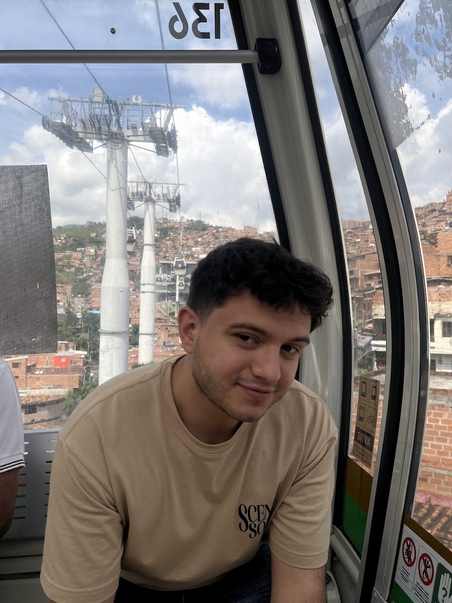
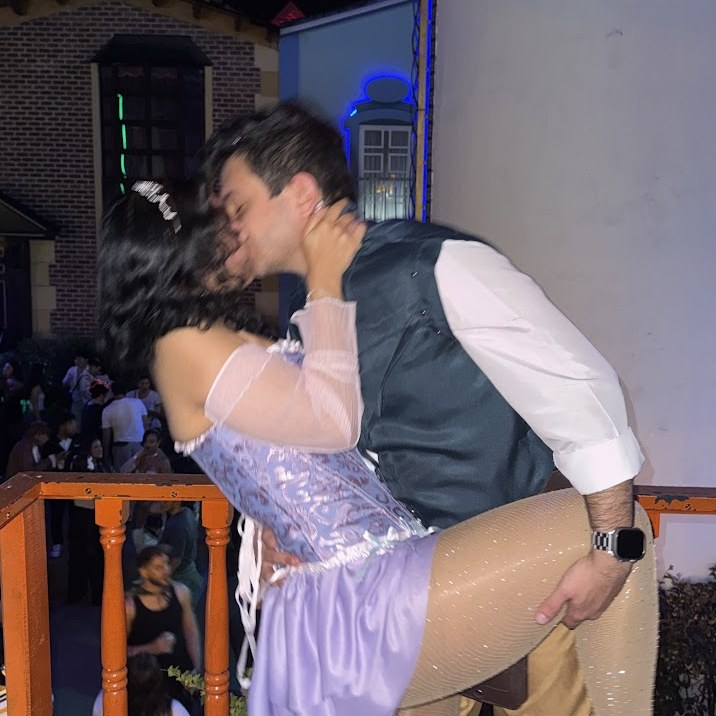
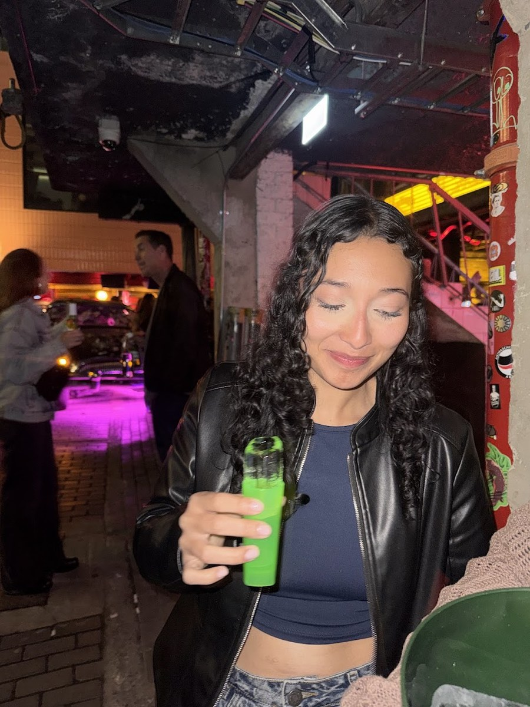
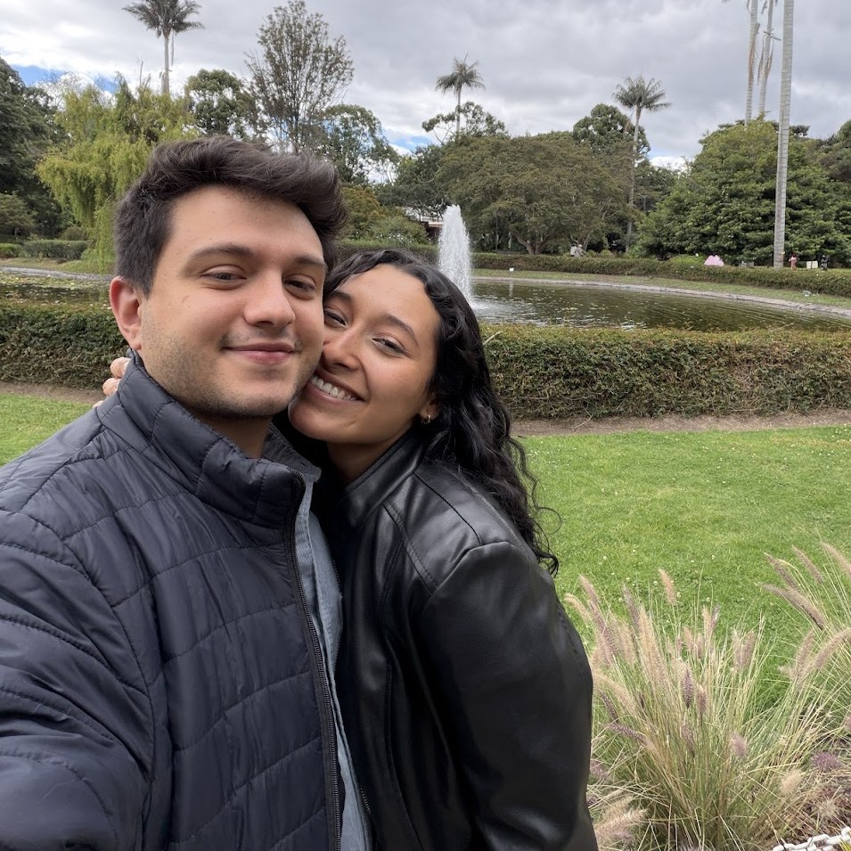
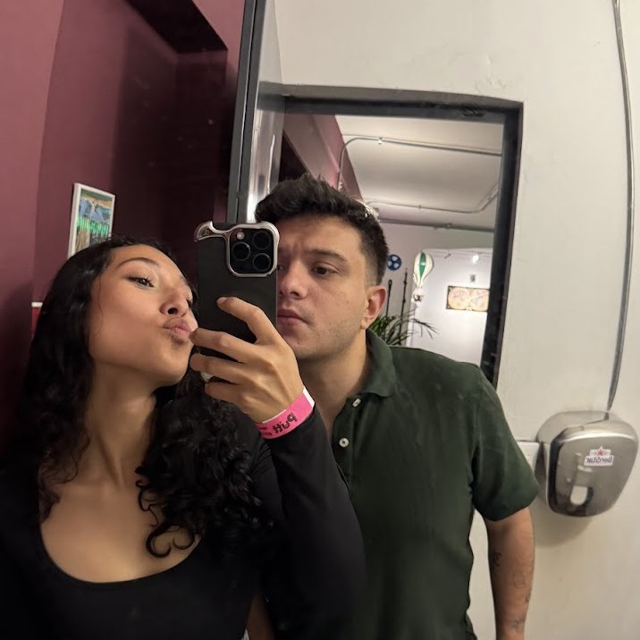
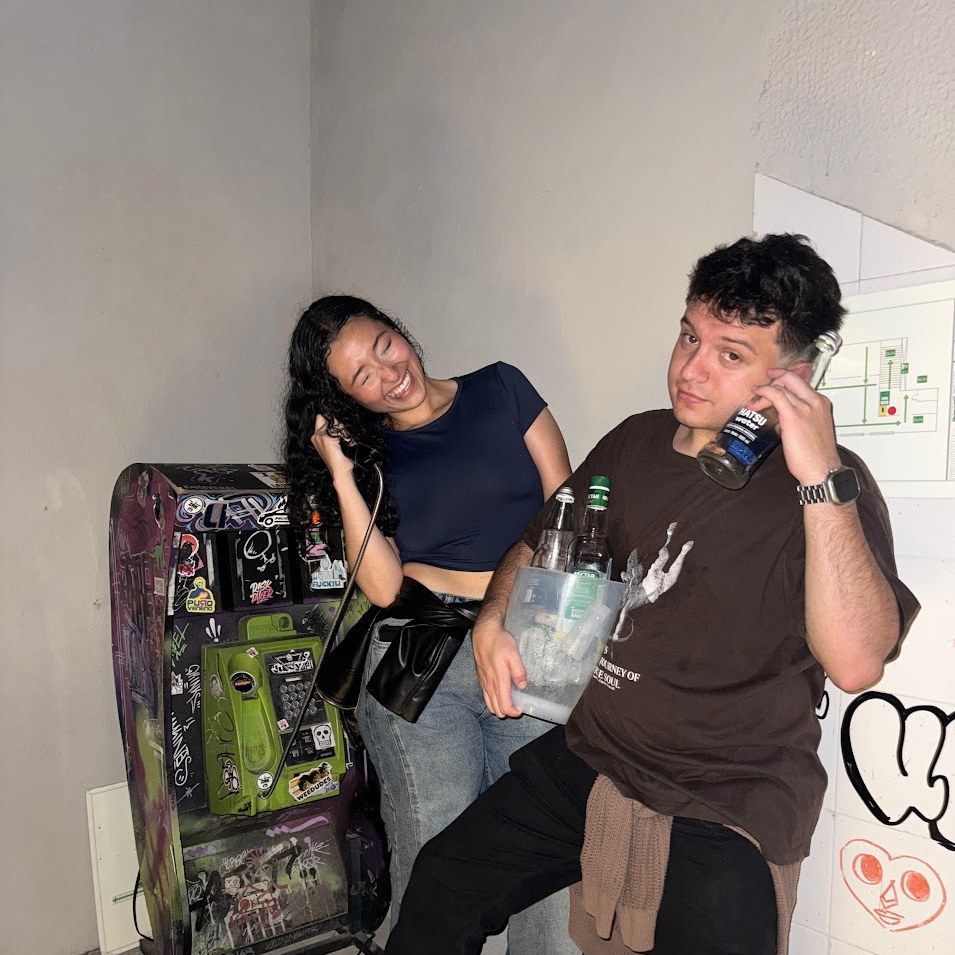
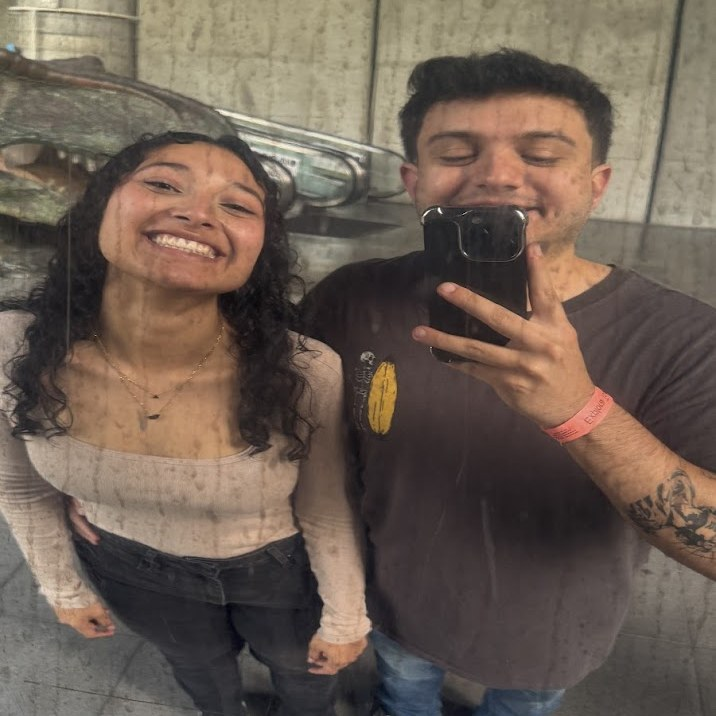
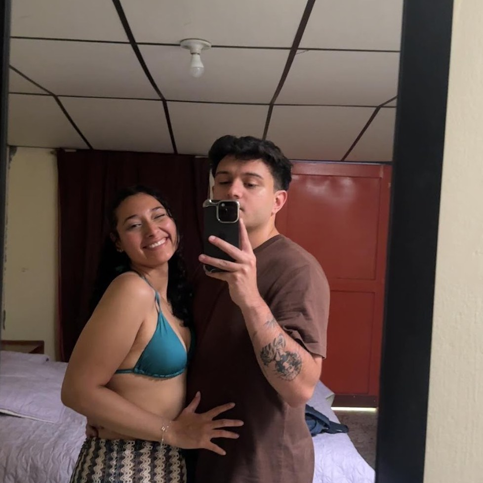
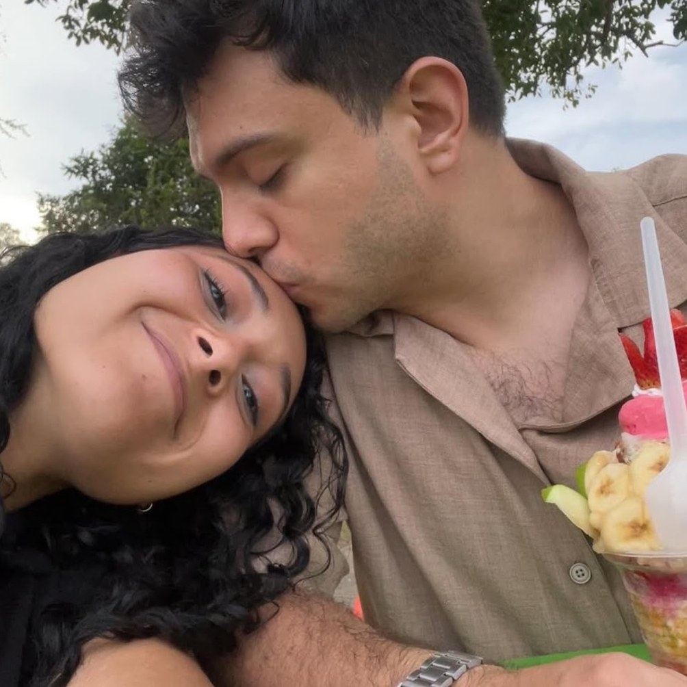

- Sujeto 01
- Juan Sebastián
- Rol
- Planeó todo esto en silencio durante semanas.
Sujeto femenino bajo observación continua desde hace un año. Se le ha visto reír sin motivo aparente, siempre en compañía del mismo civil.
El civil en cuestión responde al nombre de Juan Sebastián y lleva semanas comportándose de forma sospechosa: llamadas en voz baja, pestañas cerradas de golpe, sonrisas fuera de lugar.
Se adjunta evidencia fotográfica recuperada del archivo.
Toque las barras negras para desclasificar.

Se detectó la compra de dos pasajes aéreos a nombre de ambos sujetos. Fecha del desplazamiento: 24 de noviembre, hora de salida 06:30.
Origen confirmado: Bogotá, El Dorado. Rumbo: norte. Duración estimada del vuelo: 1 h 32 min.
Destino: ███████████. Clasificado hasta nueva orden.
Se adjunta trazado de la ruta interceptada.
Toque las barras negras para desclasificar.
El destino registra cuatro movimientos ya programados. Ninguno figura con nombre en el expediente.
24 — 28 · noviembre · 2026
Cinco días. Todo pago. Nada por hacer más que llegar.
Cinco días en la costa, del 24 al 28 de noviembre de 2026. Vuelos, hotel, traslados y todos los recorridos ya están confirmados y pagos.


Traslados aeropuerto — hotel — aeropuerto incluidos. Cuatro noches en el Hotel Santa Cecilia B&B, con desayuno cada mañana.
Agregar los vuelos al calendarioAterrizaje a las 08:02 y traslado directo al Hotel Santa Cecilia B&B. En la tarde, dos horas a bordo del Bequia Eagle recorriendo la bahía mientras se cae el sol. Bar abierto.
Barco · 2 horasCuatro horas por Bocagrande, Castillogrande, La Bodeguita, la Torre del Reloj y Getsemaní. Subida al convento de La Popa por la vista, entrada al Castillo de San Felipe de Barajas y caminata entre plazas, calles empedradas y Las Bóvedas.
Entrada a San Felipe incluidaLancha hacia el club de playa: parasol, asoleadoras, barra abierta todo el día y almuerzo típico a elegir entre filete de pescado, pollo a la plancha, arroz con mariscos o arroz con vegetales. Opcional: recorrido panorámico con parada en el Oceanario.
8 horas · Bar abiertoSin agenda, a propósito. Lo que decidamos esa mañana: dormir hasta tarde, perdernos en el centro histórico, comer donde huela bien.
Sin instruccionesTraslado al aeropuerto y vuelo de las 13:01 de vuelta a Bogotá. Operación cerrada a las 14:30.
Finales de noviembre en Cartagena: entre 26 y 32 °C, humedad alta y sol fuerte desde temprano. Es la cola de la temporada de lluvias, así que puede caer un aguacero corto en la tarde y despejarse veinte minutos después. El mar ronda los 29 °C.
Aterrizamos a las 08:02, bastante antes del check-in. La maleta se puede dejar en recepción mientras tanto. El día del regreso pasa lo mismo: el check-out va antes del vuelo de la 13:01, así que el equipaje vuelve a recepción.
Un equipaje de cabina de 12 kg para los dos, más un artículo personal de 10 kg por persona: bolso o morral, sin llantas. Lo que se pase de ahí lo cobra Wingo en el aeropuerto.






Rompa el sello
Laura, mi amor,
Llevo semanas guardando este secreto y no sabes lo difícil que fue. Cada vez que hablabas del mar, o de que necesitábamos salir de Bogotá, tenía que hacerme el desentendido sabiendo que ya estaba todo comprado.
Un año contigo se me pasó increíblemente rápido. Y se me ocurrió que la mejor forma de celebrarlo no era un regalo que se quede en la casa, sino cinco días que después podamos contar, cumpliendo una de las cosas que mas me has dicho que quieres hacer.
Así que empaca ligero. El 24 de noviembre a las 6:30 de la mañana nos vamos, y de ahí en adelante lo único que tenemos pendiente es el mar.
Te amo mi vida.
— Juan